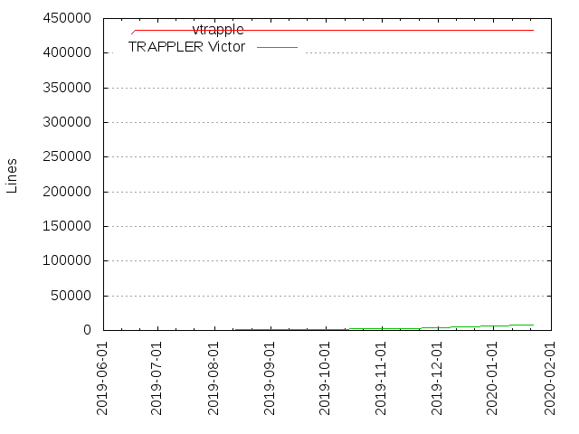
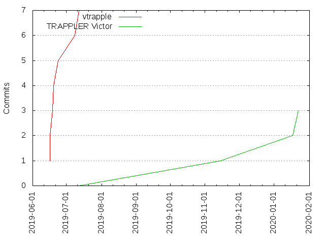

Authors
| Author | Commits (%) | + lines | - lines | First commit | Last commit | Age | Active days | # by commits |
|---|
| vtrapple | 7 (70.00%) | 433027 | 224 | 2019-06-17 | 2019-07-12 | 25 days, 5:03:06 | 6 | 1 |
| TRAPPLER Victor | 3 (30.00%) | 7924 | 4260 | 2019-11-14 | 2020-01-22 | 69 days, 3:48:55 | 3 | 2 |


| Month | Author | Commits (%) | Next top 5 | Number of authors |
|---|
| 2020-01 | TRAPPLER Victor | 2 (100.00% of 2) | | 1 |
| 2019-11 | TRAPPLER Victor | 1 (100.00% of 1) | | 1 |
| 2019-07 | vtrapple | 2 (100.00% of 2) | | 1 |
| 2019-06 | vtrapple | 5 (100.00% of 5) | | 1 |
| Year | Author | Commits (%) | Next top 5 | Number of authors |
|---|
| 2020 | TRAPPLER Victor | 2 (100.00% of 2) | | 1 |
| 2019 | vtrapple | 7 (87.50% of 8) | TRAPPLER Victor | 2 |
| Domains | Total (%) |
|---|
| inria.fr | 10 (100.00%) |
|---|